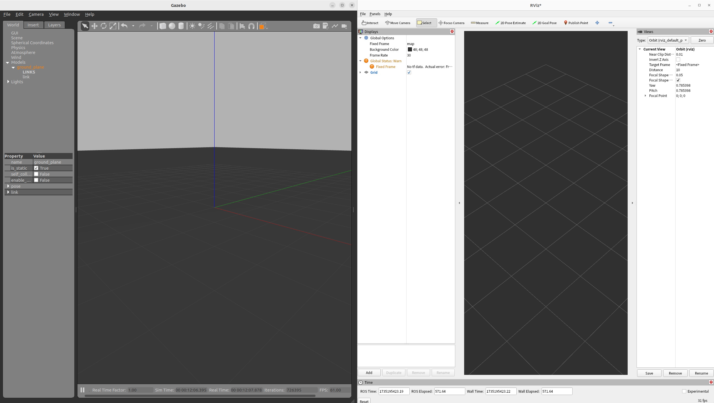

Ubuntu22.04でのROS2Humble環境構築(ROS2デフォルト)
1. ROS2Humbleのインストール
aptでインストール可能なパッケージの「一覧」を更新する
aptでインストール済みのパッケージ更新をおこない、新しいバージョンにアップグレードする
開発時に良く使うものをインストールするをaptでインストールする
ROS2のaptキーを取得し追加する
sudo curl -sSL https://raw.githubusercontent.com/ros/rosdistro/master/ros.key -o /usr/share/keyrings/ros-archive-keyring.gpg
ROS2をaptのパッケージリストに追加する
echo "deb [arch=$(dpkg --print-architecture) signed-by=/usr/share/keyrings/ros-archive-keyring.gpg] http://packages.ros.org/ros2/ubuntu $(source /etc/os-release && echo $UBUNTU_CODENAME) main" | sudo tee /etc/apt/sources.list.d/ros2.list > /dev/null
aptでインストール可能なパッケージの「一覧」を更新する
ROS2 humbleをaptでインストールする
2. ROS2Humbleの環境設定を追加
3. ROS2のコマンドラインツールの自動補完
4. ROS2のビルドツールcolconのインストール
sudo apt -y install cmake git libbullet-dev python3-flake8 python3-pip python3-pytest-cov python3-rosdep python3-vcstool python3-setuptools python3-colcon-common-extensions python3-rosinstall-generator wget
5. ROS2ビルドツールcolconコマンドのTab補完を出す環境設定を追加
下記コマンドで~/.bashrcにROS2ビルドツールcolconコマンドのTab補完を出す環境設定を追加する。
6. ROS2パッケージ直下に移動できるcolcon_cdコマンドを追加する環境設定を追加
下記コマンドで~/.bashrcにROS2パッケージ直下に移動できるcolcon_cdコマンドを追加する環境設定を追加する。
7. ROS2ノード実行時のログ出力に色付けする環境設定を追加
下記コマンドで~/.bashrcにROS2ノード実行時のログ出力に色付けする環境設定を追加する。
8. ROS_DOMAIN_ID変数の環境設定
ROS2が通信に使用するデフォルトのミドルウェアはDDSです。
DDSでは、さまざまな論理ネットワークで物理ネットワークを共有するための主要なメカニズムは、ドメインIDと呼ばれます。
同じドメインのROS2ノードは互いに自由にメッセージを検出して送信できますが、異なるドメインのROS2ノードはできません。(ネットワーク分離が可能)
オペレーティングシステム(OS)のエフェメラルポート範囲と衝突なく安全に使用できるIDは下記の通りです。
- 全てのOSでは0〜101
- Linuxでは0~101,215~232
- Windows,MacOSでは、0~166
設定していない場合、ROS_DOMAIN_ID=0が適用されます
なので、同じネットワーク上でROS2を実行しているコンピューターの異なるグループ間の干渉を回避するには、グループごとに異なるドメインIDを設定する必要があります。
また、下記でlocalhostのみにDDS通信を制限できるので作業環境によっては使いましょう。ただし、Ubuntuのデフォルトではloインターフェイスのmulticastがoffなので、sudo ip link set lo multicast onでonにする必要があります。これを~/.bashrcに記述すると端末起動時に毎回パスワード入力が発生するため、特殊な書き方をすることで電源起動時の1度のみにすることができます。この記述はDDS設定でもsudoを用いるものがあるため、DDS設定の部分で後述します。
9. シミュレータGazeboのエラー回避用スクリプトの設定(gazebo_clientが表示されない不具合対応)
Gazeboのモデル読込に失敗した場合、gazebo_clientが表示されない不具合があります。 この不具合はgazeboの環境設定を読み込むことで直すことができるため、環境変数に書いておきます。
10. DDSの入れ替え(humbleの場合)
humbleでデフォルトで使用されているDDSのFastRTPSには現在不具合があり、FastRTPSでNavigation2を使用するとlocal costmapが生成されないことが良く起こります。この状態だと障害物回避ができずに衝突してしまうため、現在Navigation2が安定して動作するCycloneDDS(galacticでのデフォルト)に変更します。また、CycloneDDSはデフォルトでは大きなデータ通信(点群や画像など)ができないように設定されているため、この設定を調整します。(net.ipv4.ipfrag_time=3,net.ipv4.ipfrag_high_thresh=134217728(128MB))
# CycloneDDSのインストール
sudo apt install ros-humble-rmw-cyclonedds-cpp
echo "export RMW_IMPLEMENTATION=rmw_cyclonedds_cpp" >> ~/.bashrc
CycloneDDSの設定とローカルホストのみで通信用にloインターフェイスのmulticastを有効化するために~/.bashrcに下記を追加します。端末を開くと初回のみパスワード要求が出るようになります。
cat << 'EOL' >> ~/.bashrc
if [ ! -e /tmp/kernel_network_conf_is_set ]; then
sudo sysctl -w net.core.rmem_max=2147483647
sudo sysctl -w net.ipv4.ipfrag_time=3
sudo sysctl -w net.ipv4.ipfrag_high_thresh=134217728 # (128 MB)
sudo ip link set lo multicast on
touch /tmp/kernel_network_conf_is_set
fi
EOL
~/cyclonedds_config/cyclonedds_config.xmlというファイルを作成し、CycloneDDSの最小ソケット受信バッファーサイズを調整します。
設定に関してはAutowareを参考にしています。
~/cyclonedds_config/cyclonedds_config.xmlに下記をコピーして貼り付ける
<?xml version="1.0" encoding="UTF-8" ?>
<CycloneDDS xmlns="https://cdds.io/config" xmlns:xsi="http://www.w3.org/2001/XMLSchema-instance" xsi:schemaLocation="https://cdds.io/config https://raw.githubusercontent.com/eclipse-cyclonedds/cyclonedds/master/etc/cyclonedds.xsd">
<Domain Id="any">
<General>
<!-- <Interfaces>
<NetworkInterface autodetermine="true" priority="default" multicast="default" />
</Interfaces> -->
<AllowMulticast>default</AllowMulticast>
<MaxMessageSize>65500B</MaxMessageSize>
</General>
<Internal>
<SocketReceiveBufferSize min="10MB"/>
<Watermarks>
<WhcHigh>500kB</WhcHigh>
</Watermarks>
</Internal>
</Domain>
</CycloneDDS>
~/.bashrcに設定を追加する
11. (オプション)クラッシュレポートを非表示にする
開発時にROS2関連のプログラムやツールを使用していると予期せぬプログラム終了が起こることが多々ある。その際にクラッシュレポートが毎回出るのが邪魔になることがあるため、非表示オプションを記載する。
12. rqtのインストール
13. gazeboのインストール
14. Turtlebot3シミュレーションの環境構築
sudo apt -y install ros-humble-dynamixel-sdk ros-humble-turtlebot3-msgs ros-humble-turtlebot3 ros-humble-turtlebot3-simulations
echo "export TURTLEBOT3_MODEL=waffle" >> ~/.bashrc
echo "export GAZEBO_MODEL_PATH=$GAZEBO_MODEL_PATH:/opt/ros/humble/share/turtlebot3_gazebo/models" >> ~/.bashrc
echo "export TURTLEBOT3_MODEL=waffle" >> ~/.bash_profile
echo "export GAZEBO_MODEL_PATH=$GAZEBO_MODEL_PATH:/opt/ros/humble/share/turtlebot3_gazebo/models" >> ~/.bash_profile
15. Navigation2のインストール
16. ~/.bashrcの内容まとめ
# ROS2Humbleの環境設定を読み込む
source /opt/ros/humble/setup.bash
# ROS2のワークスペースを読み込む(説明後述)
source ~/ros2_ws/install/setup.bash
# ROS2のビルドシステムcolconのTab補完機能を有効にする
source /usr/share/colcon_argcomplete/hook/colcon-argcomplete.bash
# ROS2パッケージ名でパッケージのある場所まで移動できるcolcon_cdコマンドを有効にする
source /usr/share/colcon_cd/function/colcon_cd.sh
# colcon_cdコマンドの検索対象ディレクトリを設定する
export _colcon_cd_root=/opt/ros/humble/
# ROS2ノード実行時のログ出力に色付けする環境設定を読み込む
export RCUTILS_COLORIZED_OUTPUT=1
# ログ出力をファイル名、関数名、行番号などの詳細情報を出力するようにカスタマイズ
export RCUTILS_CONSOLE_OUTPUT_FORMAT="[{severity} {time}] [{name}]: {message} ({function_name}() at {file_name}:{line_number})"
# ROS2のドメインIDを設定する(同じドメインIDの端末のみDDS通信可能)
# export ROS_DOMAIN_ID=39
# ローカルホストのみで通信設定
export ROS_LOCALHOST_ONLY=1
# シミュレータGazeboのエラー回避用スクリプトを読み込む
source /usr/share/gazebo/setup.sh
# ROS2のDDSをCycloneDDSに変更する
export RMW_IMPLEMENTATION=rmw_cyclonedds_cpp
# CycloneDDSの設定を行う+ローカルホストのみで通信用にloインターフェイスのmulticastを有効化
if [ ! -e /tmp/kernel_network_conf_is_set ]; then
sudo sysctl -w net.core.rmem_max=2147483647
sudo sysctl -w net.ipv4.ipfrag_time=3
sudo sysctl -w net.ipv4.ipfrag_high_thresh=134217728 # (128 MB)
sudo ip link set lo multicast on
touch /tmp/kernel_network_conf_is_set
fi
export CYCLONEDDS_URI=~/cyclonedds_config/cyclonedds_config.xml
# Turtlebot3シミュレーション用の設定(説明後述)
export TURTLEBOT3_MODEL=waffle
export GAZEBO_MODEL_PATH=:/opt/ros/humble/share/turtlebot3_gazebo/models
開発を便利にする機能やショートカットキー
開発を便利にする機能やショートカットキーついて紹介します。
標準ターミナル操作関連ショートカットキー
ROS2の開発では、ターミナルを大量に開きます。マウス操作は非常に時間がかかるため、キーボードショートカットを覚えましょう。
- controlキー(CTRL)+Altキー+
t: 新しいウインドウでターミナルを開きます - controlキー(CTRL)+Shift+
t: 新しいタブでターミナルを開きます(画面上のスペースを取らないので便利です) - controlキー(CTRL)+
d: ターミナルウインドウを閉じたり、仮想環境ターミナルを抜けることが可能です。終了コマンドであるexitと同様の機能があります。 - controlキー(CTRL)+
c: コピー＆ペーストのコピーのショートカットキーとして有名ですが、ターミナル上で実行することでプログラムを停止できます。 - 矢印キー(上下): 前回入力したコマンドを再入力してくれます。
- controlキー(CTRL)+Shift+
c: ターミナル上でのコピーキーです。 - controlキー(CTRL)+Shift+
v: ターミナル上でのペーストキーです。
標準ターミナルよりも便利なターミナルアプリはたくさんあります。ネット上に色々紹介されているので自分に合ったものを探してみてください。
ウインドウ画面配置の操作
キーボードにWindowsキーがある場合、矢印キー(左右)と組み合わせることで、画面配置を変更することができます。
下記のようにGazeboとRvizを同時に見たい場合などは非常に便利です。

visual studio codeのインストール
便利なコードエディタの紹介です。
下記ページ(ブラウザで「vscode」と検索でもよい)から.debファイルをダウンロードし保存する。その後ソフトウェアのインストールから実行しインストールする
visual studio codeのインストール
使い方は、ターミナルで開きたいフォルダまでcdコマンドで移動し、下記コマンドでフォルダごと開くことが可能です。